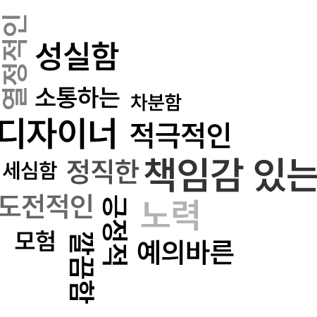
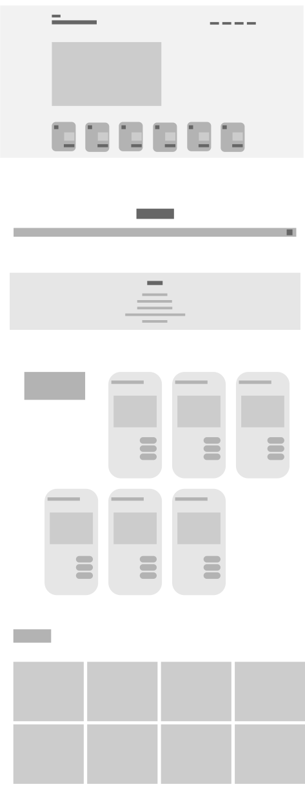

Designer
Kim
경주마의 질주와 같은 열정
Kim
Doyeon
copyrights 2023 DesignerKim co,.ltd.
all rights reserved.
Portfolio 2023
Personality
About Me
꾸미는, 꿈있는 디자이너
김도연
doyeon Kim
010.5516.2721
ab2721@naver.com
동아대학교 공예학과 섬유미술전공
Certificate
컴퓨터그래픽스운용기능사
문화예술교육사
컴퓨터활용능력2급
웹디자인기능사
Skill
기획부터 디자인까지
Adobe Lllustrator
Adobe Photoshop
Adobe Indesign
Auto Cad
Visual Studio Code
Microsoft Excel
Microsoft PowerPoint
Design
Process
Research & Analysis
트렌드 리서치를 통해 최신 동향을 분석하고,
이를 벤치마킹해서 적용가능한 방향을 찾아
기술 이해도를 높이려고 노력합니다.
Moodboard & Design approach
무드보드를 활용하여 컬러, 타이포그래피, 그래픽, 톤을
정의하여 통일감있는 디자인방향을 계획합니다.
Layout process
컨셉에 맞는 레이아웃 디자인을 진행하고,
디자인 리소스를 일러스트, 포토샵을 활용하여 정리합니다.
Index
Marshall 웹사이트 리뉴얼 프로젝트
서울역사아카이브 반응형 웹사이트 리뉴얼 프로젝트
GS건설 자이 웹사이트 리뉴얼 프로젝트
Project
01
Marshall
“Music is at the heart of everything we do.”
Terry Marshall.
MARSHALL OFFICIAL WEB REDISIGN
DESIGN & CORDING doyeon Kim
Design Concept
Overview
마셜 앰플리피케이션은 전자 기타 앰플리파이어를 설계/제조하는 영국의 회사입니다.
마셜이 가지고 있는 브랜드의 정통과 아이덴티티를 강조하는 것을 목표로 하였습니다.
As is
메뉴를 클릭해야 나오는 컨텐츠들을 한 페이지 내에서
쉽게 찾아볼 수 있도록 할 필요가 있었으며,
레이이아웃 그리드의 단조로운 문제가 있었습니다
To be
브랜드의 아이덴티티를 한눈에 볼 수있게 디자인하고자 하였고,
클릭하지 않고도 다양한 컨텐츠들을 접할 수 있게
리디자인 하였습니다.
Color
Typography
Impact
regular / bold
Amplify
bold
Design Keywords
강렬하고 자유로운 느낌을 나타냄과 동시에,
효율적인 정보전달을 위한 디자인 계획을 세우고자 했습니다.
Wireframe
1920px 해상도를 기준으로 메인페이지 구성 후,
각 컨텐츠 영역별로 wire frame을 제작하였습니다.

Main Page
메인페이지의 배너영역을 제품카테고리 중,
마샬의 시그니처 아이템인 MAJOR 으로 구성하였고
플레이 아이콘을 누르면 마샬만의
익스클루시브한 음악을 들을 수 있는 편의성을 제공하였습니다.
Sub Page
마샬의 유니크하고 임팩트있는 컬러를 유지하고자 하였으며,
주력상품이미지를 보여주어 정보의 흐름을 직관적으로 나타내보았습니다.
따뜻한 계열의 하이라이터효과를 사용하여 브랜드가 가지고있는 장점을
효과적으로 보여주었습니다.

Project
02
Seoul history of museum
Mobile & Desktop design
Overview
서울역사아카이브는 박물관 소장자료인
서울시정사진, 서울지도, 근현대 서울사진과 조사연구 성과인
서울생활문화자료조사, 서울발굴기록, 서울미래유산기록을
검색할 수 있는 사이트입니다.
사이트 사용이 용이하도록 UI 디자인을 하고자하였으며
pc이외에 다양한 디바이스에서도 사이트에 접근하기 편하도록
반응형 웹사이트로 진행하였습니다.
Color & Typhography
컨텐츠에 집중할 수 있도록
레드와 대비되는 그레이계열을 사용해서
조화로움을 유지하고자 하였습니다.
Color
Typhography
DM-Serif
Bold
Pretendard
Light / Regular
Wireframe
Mobile ver
Desktop ver
Direction
To be
톤앤매너를 준수하여 레드와 대비되는 그레이계열을 사용해서
조화로움을 유지하고자 하였습니다.
메인페이지에서 보여지는 수치들을 카운팅효과로
표현해주어 재미요소를 추가해보았습니다.
앱 형식의 박스들로 구성하여 사용자들이 쉽게 이용하고,
찾아볼 수 있도록 구성하였습니다.
원하는 페이지로
쉽고 빠르게
처음이용하는 사용자들도
주사용 기능의
빠른 진입과 탐색이 가능하도록
구성하였습니다.
Main page
그레이 계열의 백그라운드이미지와
서울역사아카이브의
시그니처 컬러를 사용하여
차분한 톤을 유지하였고,
수치 카운팅효과로 이용자들의 흥미를 유도했습니다.
정사각형의 레드 아이콘으로
컨텐츠 타이틀을 쉽게 찾을 수 있게 구성하였습니다.
Minimal Interface
단순하고 미니멀한 레이아웃과 아이콘을 활용하여
컨텐츠를 쉽게 파악할 수 있도록 구성했습니다.
Project
03
GS XI
자이라는 이름의 순간,
Design Keywords
이용자의 니즈를 다방면으로 고려하여 진행했습니다.
Easy
Core
Pocus
쉬운 용어와 일관된 아이콘 연결
사용자 목적에 따른 프로세스
주사용 기능의 빠른 진입과 탐색
Wireframe
Main page
첫 페이지에서는 자이의 슬로건과 이미지를 표현해주었고
메뉴는 다양한 정보들과 회사정보의 순으로 구성하여
이용자들의 목적을 쉽게 찾아볼 수 있도록 컨텐츠를 한눈에
볼 수있도록 하였습니다.
Color & Typhography
사용자가 컨텐츠에 집중할 수 있도록
4가지의 컬러를 사용하여
메세지를 효과적으로 전달하고자하였고,
깔끔한 타이포사용으로
가독성과 주목도를 높였습니다.
Color
Typography
Pretendard
Light / Regular / Bold
Sans-Serif
Bold

Sub page
자연스러운 컨텐츠 흐름을 위해
자이의 대표 아파트 이미지와
뉴스, 어워즈, 자이 갤러리,
고객센터를
순차적으로 구성해보았습니다.
간단한 슬라이더를 통한 편의성과
직관적인 설계로 이용자가 쉽게 접근할 수 있는
접근성과 편의성을 제공하였습니다.
컨텐츠별 브랜드슬로건으로
자이의 아이덴티티를 나타내주었습니다.